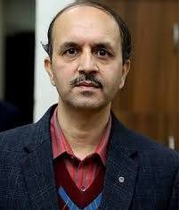
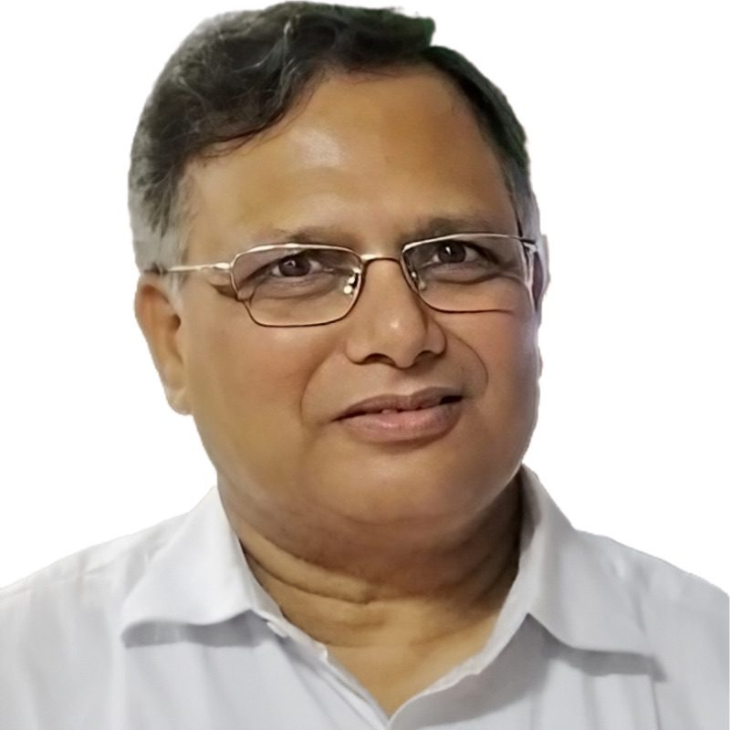
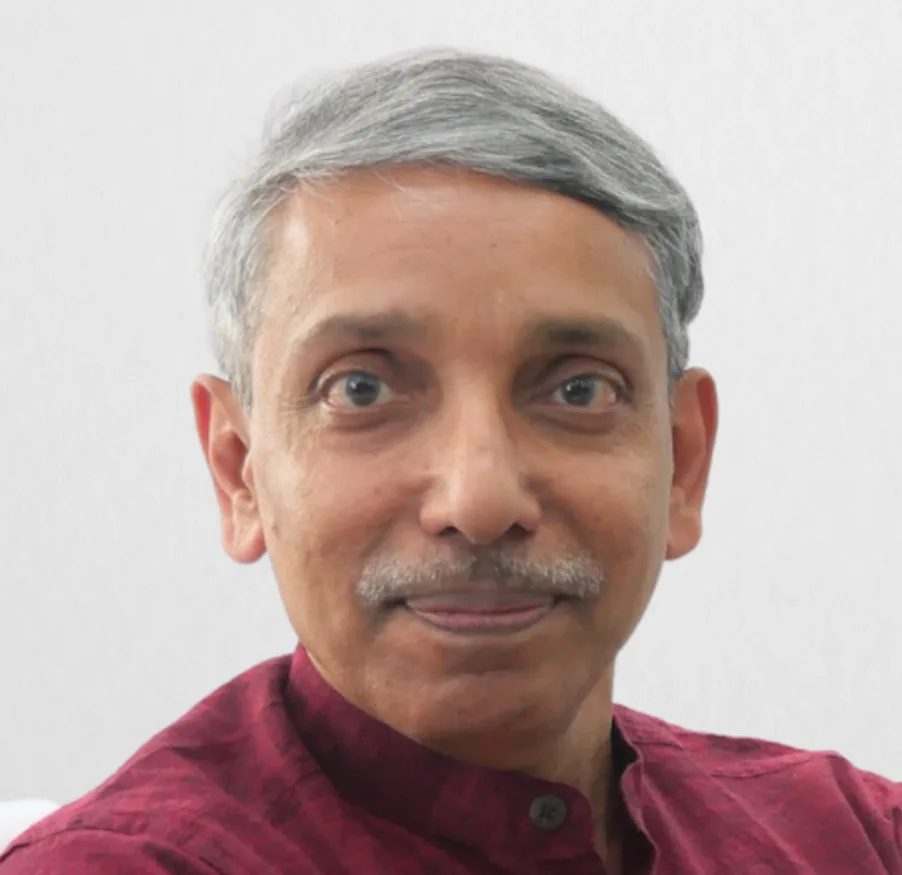
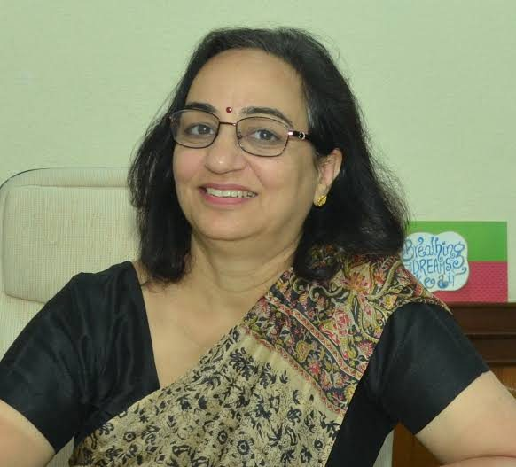
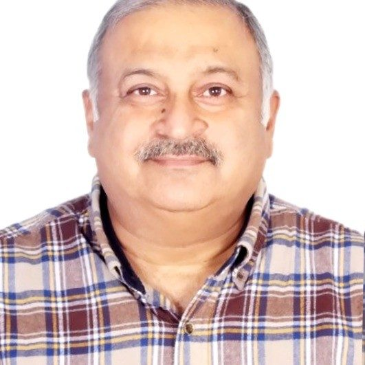
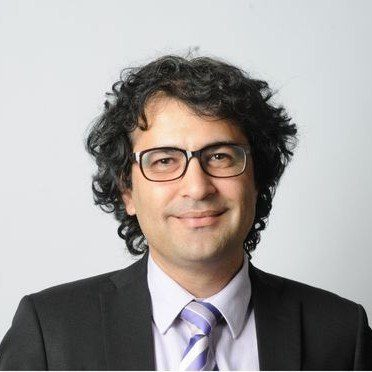
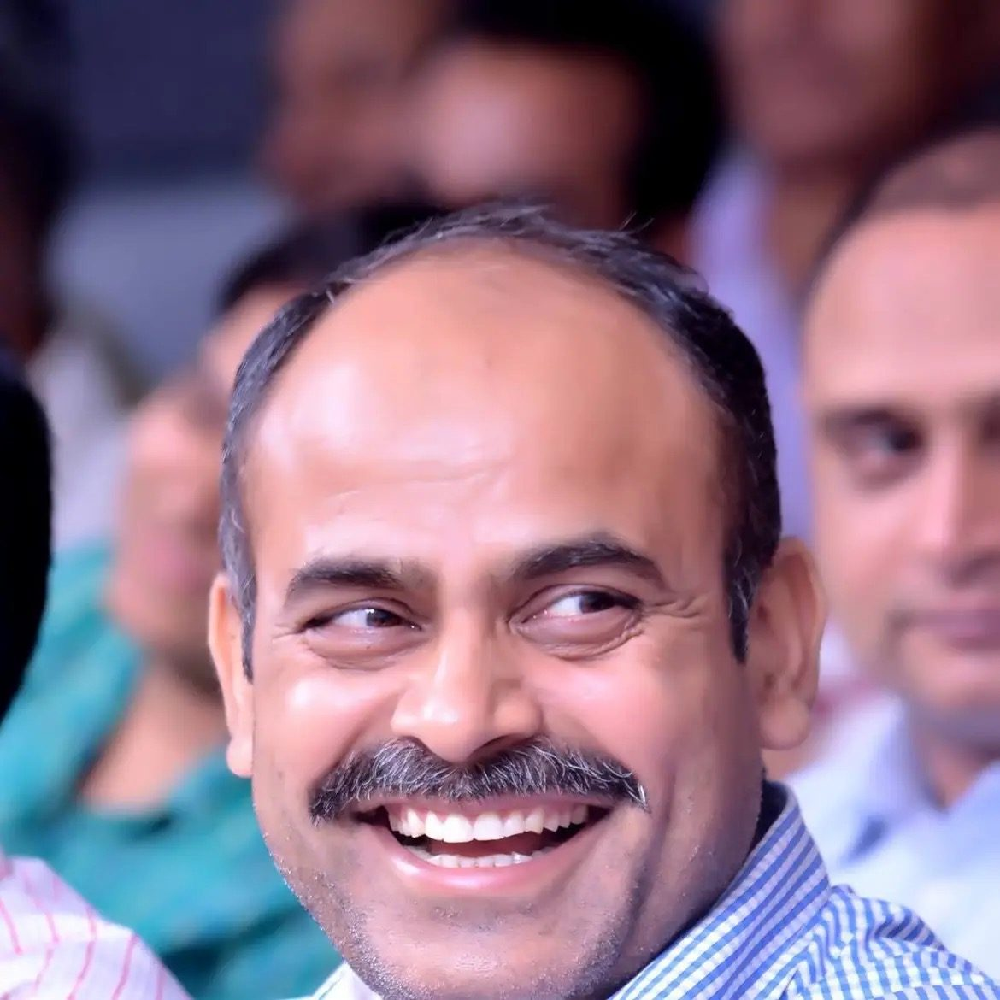

Profile, Teaching & Contact
Who I am and what I have done, what I teach at Central University of Jammu, the teachers this work descends from, and how to reach me.
Ashish K Sharma
Professor in the Department of Physics & Astronomical Sciences at Central University of Jammu, since July 2026. An experimental condensed-matter physicist: the work is thermoelectric energy conversion and power semiconductor devices, and the method is defect engineering with ion beams, answered by first-principles calculation.
The through-line since the doctorate has been building the instrument before running the experiment. Five cryogenic measurement systems designed and commissioned so far — one of them published in Review of Scientific Instruments and now used by collaborating national groups — and the in-situ DLTS facility at the IUAC Pelletron, which reads defects while the ion beam is still arriving — a pioneering in-situ capability for real-time measurement during swift-heavy-ion irradiation, first reported by the group in Semiconductor Science and Technology in 2018.
Publishes under the name Ashish Kumar: 91 papers, three patents, an h-index of 27 and about 1,850 citations. Continuous funding as principal investigator since 2015 from DST, SERB, ISRO, DRDO, UGC and IUAC.
Positions
- 2026–Professor
Central University of Jammu - 2023–26Associate Professor
Central University of Jammu - 2021–23Associate Professor
UPES Dehradun - 2020–21SERB Research Scientist
Inter-University Accelerator Centre, New Delhi - 2015–20DST-INSPIRE Faculty
Inter-University Accelerator Centre, New Delhi - 2013–15Postdoctoral Researcher
Inter-University Accelerator Centre, New Delhi
Education
- 2013Ph.D. in Physics
IIT Delhi — GaN Schottky barrier diodes under swift heavy ion irradiation, under Prof. Rajendra Singh - 2007M.Sc. Physics
Kurukshetra University, Haryana
Teaching Philosophy
Physics is best taught through the lens of active enquiry. Courses at CUJ are structured to connect foundational principles directly with open experimental questions — students in Condensed Matter Physics, for instance, regularly encounter material drawn from the group's own ongoing measurements, including live data from thermoelectric and defect-spectroscopy experiments.
This approach has a demonstrable record: three of the group's PhD students — including Dr. Vaishali Rathi, recipient of the Best PhD Thesis Award at UPES Dehradun — were first introduced to experimental research through taught courses before joining the laboratory. The boundary between classroom and research group is deliberately kept permeable.
Emphasis is placed on problem solving, quantitative reasoning, and the physical interpretation of data, with problem sets that draw on published literature wherever appropriate. Students are encouraged to engage with primary sources from the first year of postgraduate study.
"The laboratory and the lecture hall should be a continuous learning environment — not separate activities."
Research-Integrated Instruction
Lecture content in advanced courses is supplemented by primary literature, including the group's own publications. Students in Semiconductor Physics encounter real DLTS spectra, ZT measurements, and device I–V data as worked examples.
Laboratory-First Projects
Over 20 M.Sc./M.Tech project students have been supervised at CUJ, UPES, and IUAC New Delhi. Projects are structured to generate data contributing to the group's research programme, giving students genuine scientific ownership.
Resource Person — National Workshops
Regularly invited to deliver lectures at national refresher courses, workshops, and winter schools — including the UGC-HRDC Refresher Course in Physics (CUH, 2026) and the IUAC Winter School on Ion Beam Physics (2023).
Courses Taught
Central University of Jammu — Department of Physics & Astronomical Sciences.
Teachers Who Shaped Me
Every teacher carries within them the echoes of those who taught them. These are the mentors whose guidance — in the laboratory, the lecture hall, and beyond — defined the physicist and teacher I have become.


Teachers, Leaders & Collaborators





No scientist is self-made. Long before any laboratory, the foundations were built by school teachers whose patience with a curious student I only fully appreciate now — and by undergraduate teachers who first made physics feel like a living discipline rather than a body of facts to memorise.
I carry gratitude to every teacher, colleague, and scientist who treated their subject as something worth caring about deeply: to the broader community at IUAC New Delhi, where an open scientific culture showed me that every interaction — across career stages — is a potential learning; and to my own students, who have taught me far more than they know about explaining things clearly, questioning assumptions, and the responsibility that comes with standing at the front of a room.
Teaching is a relay. I became a teacher because of teachers — and everything I do in the classroom and the laboratory is, in some measure, a tribute to that chain.
Honours & Fellowships
Awards & Fellowships
- 69th Lindau Nobel Laureate Meeting, Germany (2019) — selected among roughly 600 young scientists worldwide, from an Indian nomination pool of about 15–20 across all disciplines.
- SERB Research Scientist Award (2020) — Government of India.
- DST-INSPIRE Faculty Award (2015) — five-year national fellowship carrying ₹35 L of project support.
- RSC Advances Outstanding Student Paper Award (2024) — for the PEDOT:PSS/Bi2Te3/rGO ternary composite work.
- DST–IST Visiting Fellowship (2017) — University of Valladolid, Spain.
- ICTP travel grant (2019) — Conference on Thermoelectricity, Trieste.
- DST-ITS award — for DRIP XVII, the 17th International Conference on Defect Recognition, Imaging and Physics in Semiconductors.
Contact
For research collaborations, invited lectures and academic correspondence.
Office
Room No. 120 F, First FloorAryabhatta Bhawan (Science Block)
Department of Physics & Astronomical Sciences
Central University of Jammu
Rahya-Suchani, Samba
Jammu & Kashmir 181143, India
Thinking of joining the group?
PhD, dissertation and postdoctoral positions, what the group can offer, and what to put in the email — including the case for bringing a research question of your own rather than picking one off the list — are all on the People page.